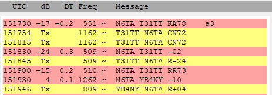

On Thu, Jun 1, 2023 at 8:32 AM Al N6TA <al.n6ta@gmail.com> wrote:
I do not understand FT8 yet, I suppose, and would like to know how I made a contact.I was calling T31TT on 30 m FT8. No QSO and decided to look for a 9M8 on 20 FT8 to fill a slot.I go to 20 M, clear the windows and see a 9W8MWT was on the band. Suddenly, T31TT calls me out of the blue. I double click on the red line and did not get the expected result where I would reply with a signal report. Instead, I am calling him, I end up with a QSO somehow. Any explanation of how the T31 knew I was on the band when I had not transmitted?Windows show what happened. I called and got the 9W8 later.Confused,Al N6TA